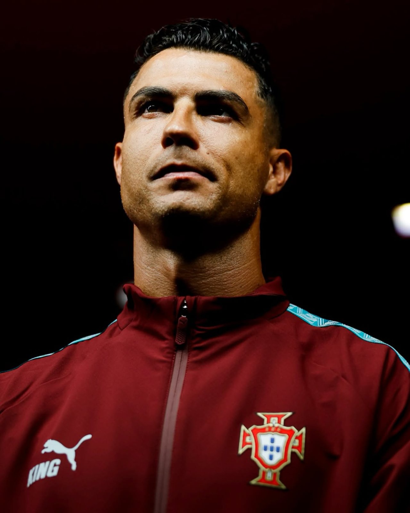

Ronaldo Shown the Touchline by Portugal While Officials Weigh His Fate
Sports
For the first time in a long career, Portugal’s most celebrated player finds himself on the wrong side of his own federation. Cristiano Ronaldo has been told to stay away from national duty until administrators decide how to treat his sudden exit from the squad’s base in Copenhagen.
The trouble began on September 30, when the veteran forward packed up and left after a falling-out with coach Jorge Jesus over how the team was being run. Nine days later, the federation’s disciplinary arm stepped in, and by Saturday it had made its stance public: Ronaldo would sit out while the matter is examined, and the file was flagged as pressing.
Fans hoping for answers soon will have to wait. Those handling the case have chosen silence for now, promising no updates until their inquiry wraps up and naming no date for a conclusion. They were also keen to point out that sitting him out is a holding measure, not a verdict, and that nothing has yet been proven against him.
What he could face is written into the federation’s own rules. Players who stay away from team commitments without a good reason risk a ban lasting anywhere from a month to half a year, along with a modest fine of between €500 and €1,000. Ronaldo’s clean disciplinary history and two decades in the national shirt may count in his favour, though his role as captain could just as easily be held against him.
The player himself has taken a notably humble line. He has said sorry to his teammates and supporters, accepted that his actions deserve a response, and insisted he wants to return once the matter is settled.
The calendar adds urgency. Should officials choose a ban beyond a month, Portugal would line up against Denmark and Wales without their talisman. Until a decision arrives, the question hanging over the squad is simple: a short break from the team, or a long one?